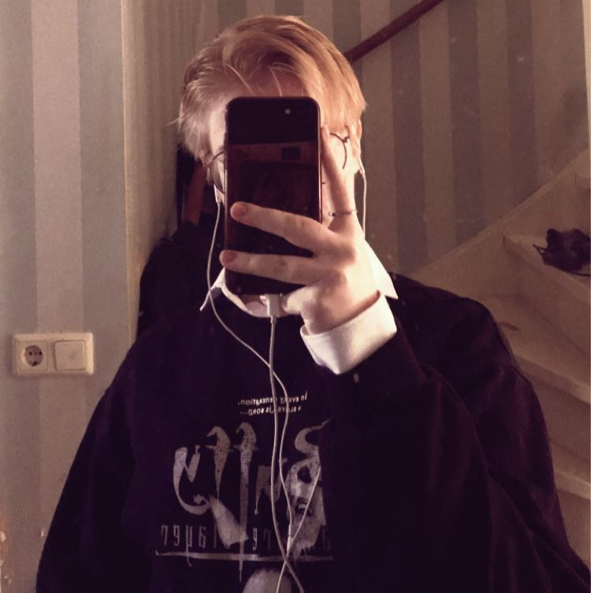

About me
My name is Savannah van wingerden.
I'm a 17 year old Visual designer from the Netherlands.
I have spent quite some time of my life putting my creativity to use through anything digitally.
How it all Started
In 2019 I started editing using a pretty well known app called 'Videostar'. I soon after changed to After effects.
Due to this hobby becoming such a creative outlet for me, it led me to the school I currently go to;
GRAFISCH LYCEUM
Programs that I currently master

Adobe After Effects

Adobe Photoshop

Adobe Premiere Pro

Adobe Illustrator
Projects
You can see all of my work at my projects page.
Everything is categorized per program! And also categorized for what or who it was made.
As in: Personal work > School work > Client work.